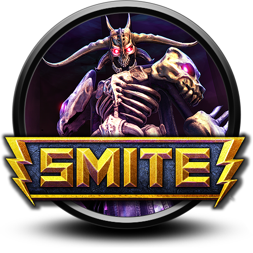

Anime
Suelo ver muchos generosdel anime puesto que le he agarrado un gran gusto a las series e historias que suelen contar o transmitir, de mis favoritos esta Dragon Ball puesto que lo vi de pequeño y le tengo mucho cariño.

VideoJuegos
Suelo jugar muchos juegos diferentes entre ellos el que más juego se llama Smite y es un Moba, tambien juego varias tonterias que suelo encontrarme en roblox, o juego minecraft para desestresarme.
